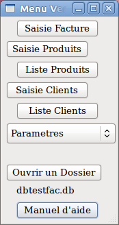

|  | Saisie
de Facture Manuel mise en page Gestion produits et services à facturer Gestion des clients et tiers destinataires des factures Paramètres (dont création de votre dossier personnel) Activation d'un dossier vergifac (base de donnée des produits, clients et paramètres divers) ( dossier de démonstration: dbtestfac.db) Ce manuel sous vos yeux. |